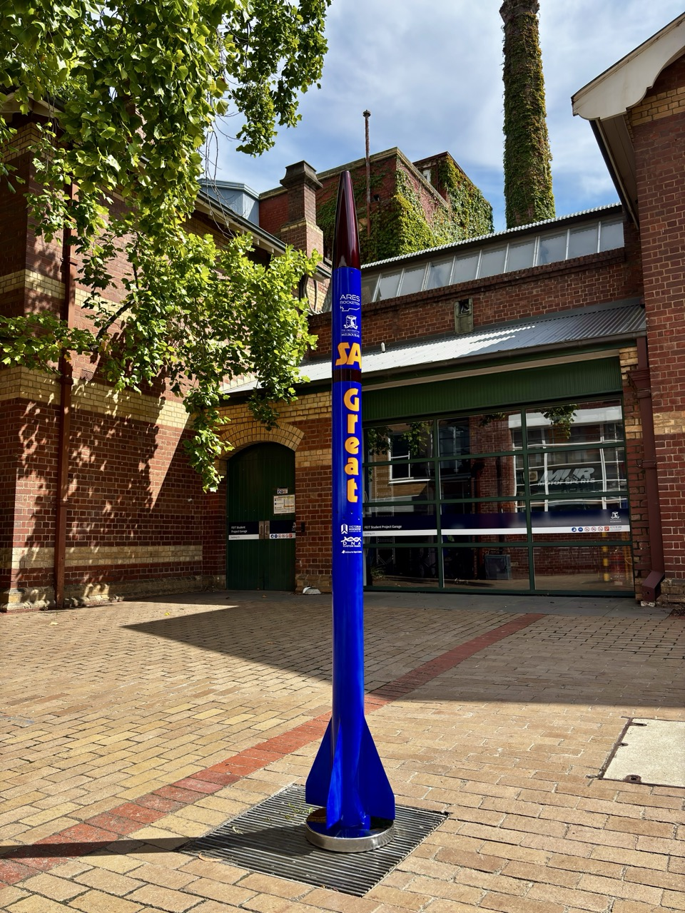
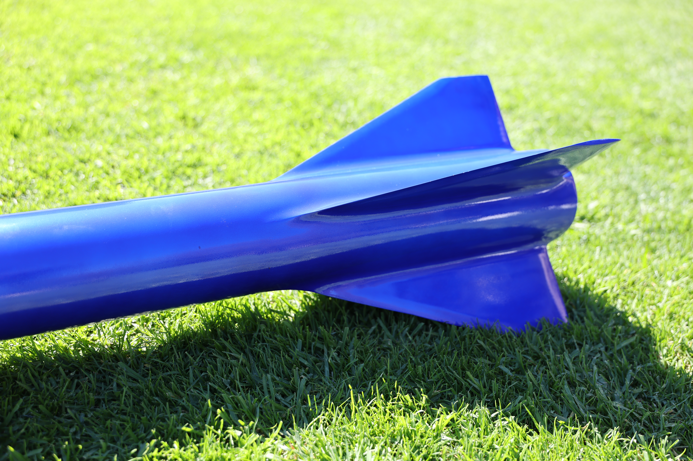
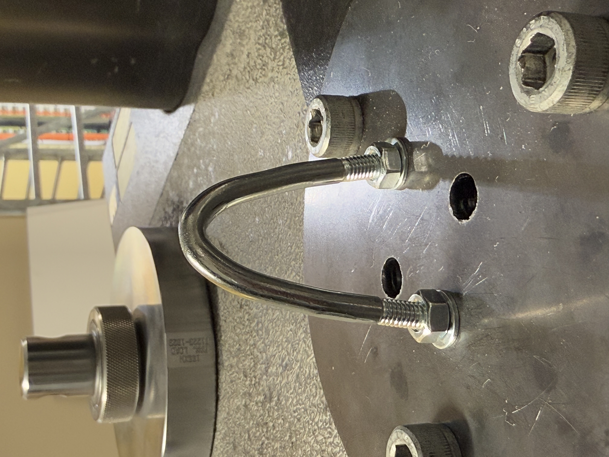

A complete Mach 2 sounding rocket targeting 24,000 ft, designed and built entirely by me as my Tripoli Level 3 certification vehicle.

Structural adequacy was established through a combination of hand calculations and flight experience, overbuilt based on learnings from previous ARES projects. The critical load case is fin flutter during boost, where I required the flutter velocity to be 50% greater than the predicted max velocity. Calculations were performed on the bulkheads for epoxy tearout, yielding, and bolt shear to ensure all primary structures are safe to support flight.
Given this rocket has no apogee target, unlike the ARES Project rockets I have made, the safety factors could be considerably higher to ensure no component fails despite the inherent weight gain. This meant many safety factors are around 2-3, with components tested to their limits on the ground before they go near a flight vehicle

Fins to suvive Mach 2

Testing U-Bolts on Instron Machine
The recovery system was developed from first principles, specifically to address failure modes I had observed across previous flight vehicles. [ Describe what those failure modes were — e.g. ejection charge reliability, harness routing, separation interface issues. ]
[ Describe your design solution — what you changed, why, and how you validated it. This is the most technically novel part of the project and deserves 2–3 paragraphs. What was your testing approach? What did you change between iterations? ]
[ Caption — describe what is shown ]
[ Caption ]
[ Caption ]
[ Describe the avionics bay design — the sled, structural interfaces, wiring, dual-deploy configuration. What were the key design decisions? What did you have to figure out yourself? ]
[ Caption ]
[ Caption ]
[ Describe the fabrication process for the key structural components — fin can attachment method, body tube source or manufacture, any machined parts. What did you make yourself vs source externally? What was the hardest thing to fabricate and how did you approach it? ]
[ Caption ]